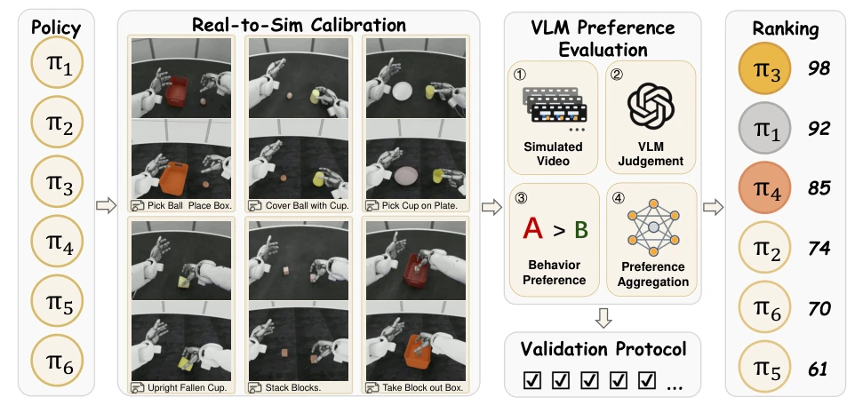
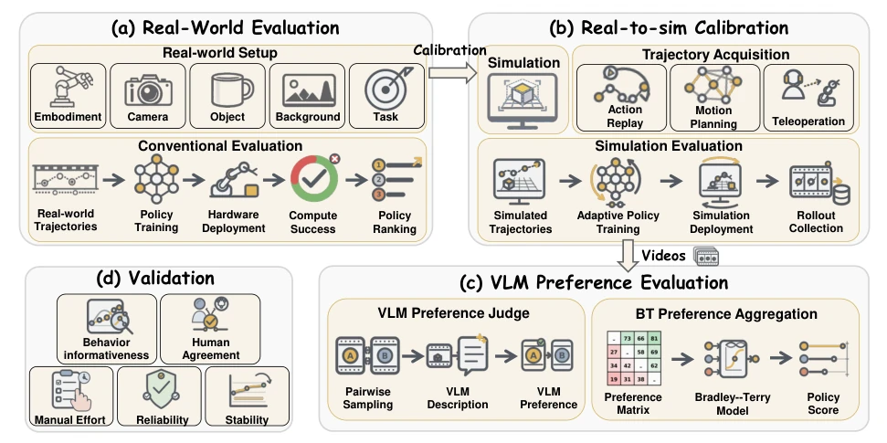
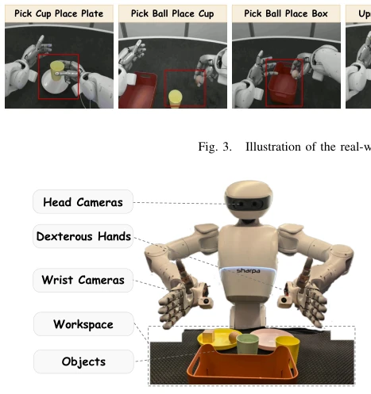
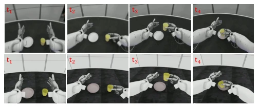
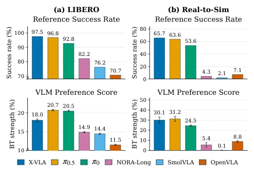
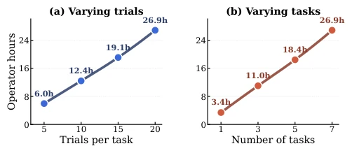
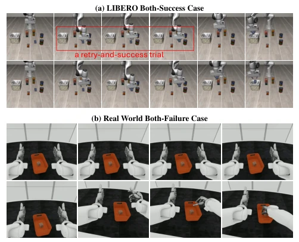
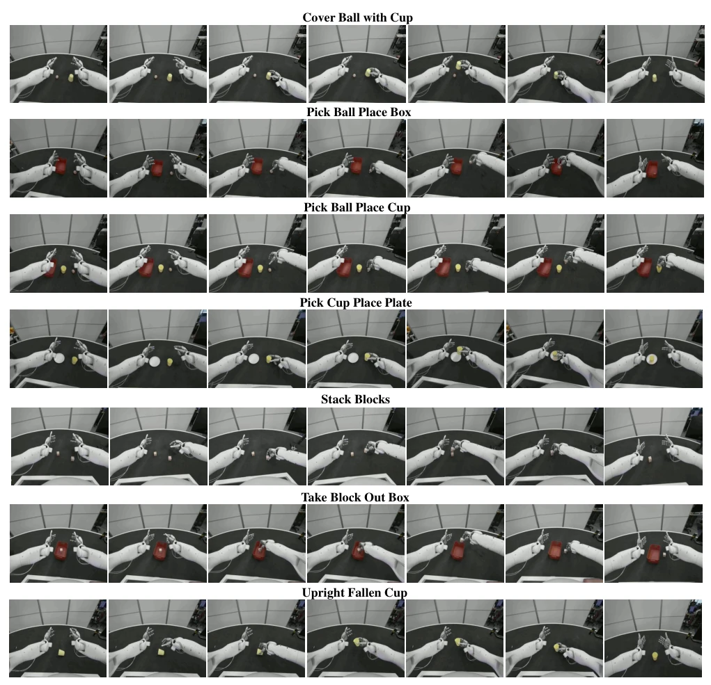
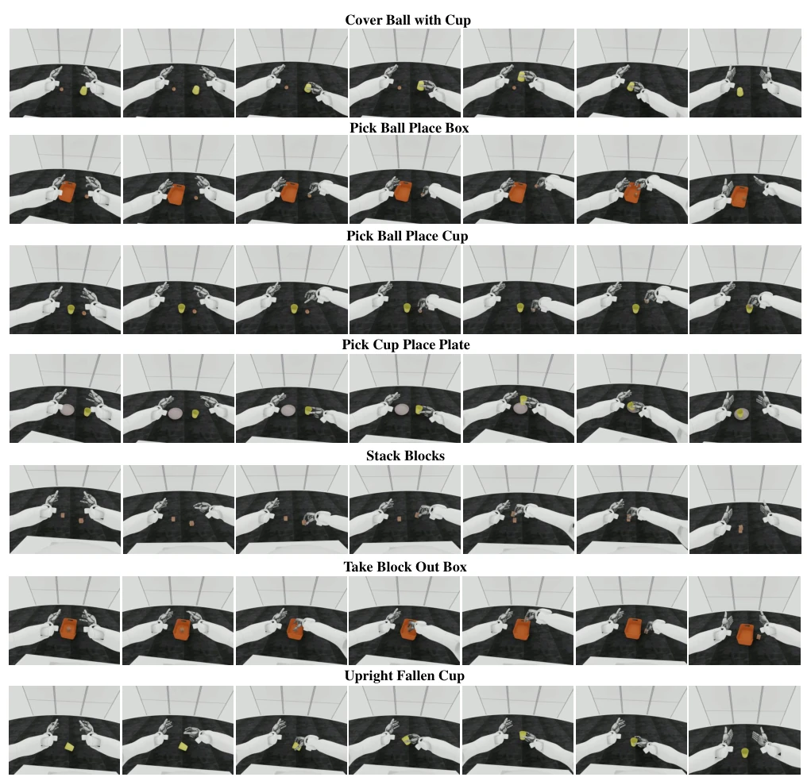
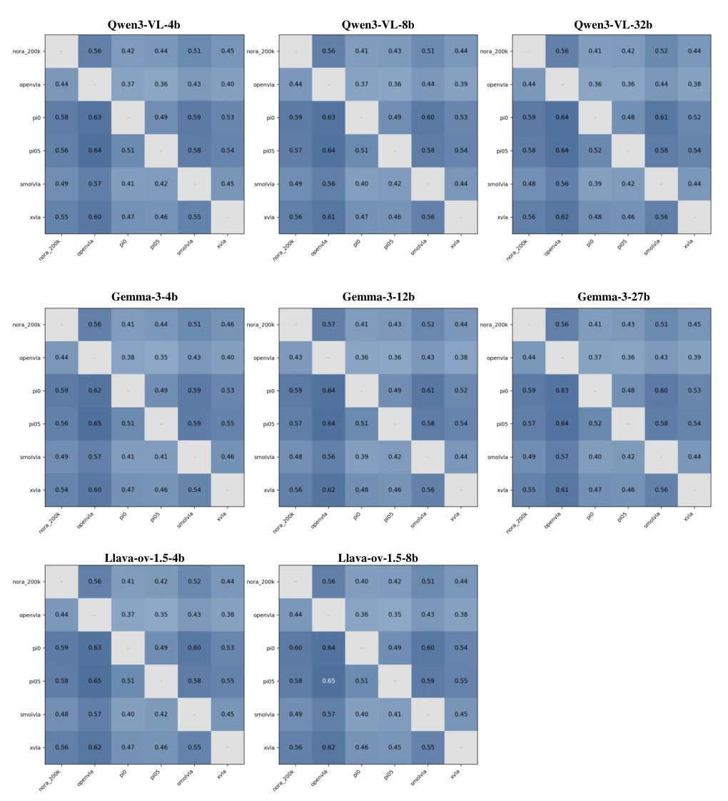

This paper casts a cold shower on the concept of "behavioral quality" within the robot evaluation community, pointing out that binary labels of "success or failure" are too coarse, akin to grading an exam without considering handwriting neatness. R2S-Eval attempts to simulate the critical eye of humans watching videos using "simulation calibration + VLM scoring". This approach is quite appealing, after all, who wouldn't want to save some hair from real robot debugging? However, directly feeding simulation videos to a VLM as a referee inevitably raises concerns: Will the VLM be "led astray" by subtle differences in rendering styles, rather than truly understanding the robot's actions? Although the authors claim simulation can reproduce real-world rankings, has the physical gap between simulation and reality (such as friction coefficients, contact noise) truly been "calibrated" away? Or is it merely swapping "hardware instability" for "simulator instability"? In short, this is an interesting attempt to solve "hard costs" with "soft evaluation", but the impartiality of the VLM as a referee still requires more "blind tests" to be falsified.
With the deployment of VLA models on physical robots, evaluating their operational strategies has become crucial. However, existing real-world evaluation methods have significant flaws: first, they are labor-intensive and unstable, requiring repeated hardware deployment, scene reset, and manual monitoring, leading to evaluation results that are difficult to reproduce [6]; second, evaluation metrics are too coarse, relying solely on binary labels of task success rate (0 or 1), unable to distinguish quality differences during execution, such as motion smoothness, error correction capability, or progress prior to failure [6]. When humans evaluate robots, they typically observe complete behavioral trajectories rather than just the final outcome. Although existing video-based methods can capture details, they lack efficient video acquisition and automated quality judgment mechanisms. Therefore, there is an urgent need for an automated evaluation framework that can both reduce hardware dependency and focus on behavioral quality like humans.

Fig. 1. Overview of the R2S-Eval pipeline for ranking robot policies using real-to-sim calibration and VLM-based preference evaluation.

Fig. 2. Detailed workflow of the R2S-Eval pipeline. To address the limitations of (a) real-world robot evaluation, (b) the calibrated real-to-sim simulator generates rollout videos for (c) VLM-based preference evaluation. (d) The full pipeline is validated.
R2S-Eval proposes a pipeline combining "Real-to-Simulation Calibration" and "Visual Language Model (VLM) Preference Evaluation". The overall process is divided into four steps: first, construct a calibrated simulation environment, obtaining trajectory videos consistent with the real-world distribution through Action Replay and motion planning, replacing expensive real-robot data collection; second, utilize the VLM as an automatic referee to make preference judgments on paired simulation videos, rather than simple success/failure scoring; next, aggregate paired preferences into potential quality scores and rankings of strategies through the Bradley-Terry model; finally, introduce a validation protocol encompassing dimensions such as reliability, stability, and human consistency. Core innovations include: 1. Simulation Calibration Strategy: not pursuing perfect digital twins, but calibrating key factors determining strategy behavior (such as robot geometry, task settings, camera viewpoints), and narrowing domain gaps through action replay and adaptive training, ensuring simulation videos reflect the relative merits of real strategies. 2. Structured VLM Evaluation: the VLM not only outputs preferences but also first provides structured descriptions of videos (such as motion smoothness, task progress), then performs paired comparisons based on descriptions, anchoring evaluation on specific execution evidence rather than vague success signals. 3. Statistical Aggregation: utilizing the Bradley-Terry model to convert discrete paired comparisons into continuous scores, and evaluating confidence intervals through Bootstrap methods, enhancing the statistical robustness of rankings.

Fig. 4. SharpaNorth robot platform.

Fig. 5. A real-world trajectory (top) and its simulated action-replay counterpart (bottom) for the Pick Cup and Place on Plate task. Each row shows four key frames ordered from left to right.
Experiments were conducted on the SharpaNorth dual-arm humanoid robot platform and the LIBERO simulation benchmark, involving 7 real desktop manipulation tasks (such as grasping, stacking, covering) and 6 VLA strategies (such as π0, OpenVLA, X-VLA, etc.). Evaluation metrics include the Spearman correlation coefficient between VLM rankings and real success rates, human preference consistency, confidence interval width, and hardware manipulation time. Results show: 1. Simulation calibration effective: the difference in strategy success rates between real and simulation environments is minimal (mean absolute error 2.13%), and rankings are highly consistent, proving simulation retains the relative merits of strategies. 2. VLM evaluation accurate: VLM-generated rankings are highly correlated with real performance (LIBERO ρ=0.823, real tasks ρ=0.957), and consistency with human preference reaches up to 82.9%-92.0%. 3. Behavior quality perception: VLM can distinguish trajectories with identical success/failure labels but different execution quality (such as smooth success vs. success via retry, failure with progress vs. failure without progress). 4. Efficiency improvement: compared to traditional real-robot evaluation, R2S-Eval significantly reduced hardware manipulation time, and with increasing comparison counts, ranking stability improved significantly.

Fig. 6. Overall policy performance of LIBERO and Real-to-Sim experi- ments. The VLM preference score is averaged over all 8 VLMs.

Fig. 7. Repeated hardware-operation effort.

Fig. 8. Representative rollout pairs with identical binary outcomes. (a) Two successful rollouts for the LIBERO task “Pick up the cream cheese and place it in the basket.” (b) Two failed rollouts for the real-to-sim task “Take the Block out of the Box.” Each rollout proceeds from left to right.

Fig. 9. Seven real-world manipulation tasks. Each row shows seven frames from left to right.
其他图片Other Figures

Fig. 10. Seven simulated manipulation tasks. Each row shows seven frames from left to right.

Fig. 11. LIBERO win-rate matrices obtained with different VLMs at the 2,000-comparison checkpoint.